When to trust it, and how to fix it when it’s broken
The past several chapters/lessons have focused on linear models. Here we explore options for analysis when linear model assumptions are not met. In doing so, we review several different approaches, many of which could be (and are) the focal topic of courses and books. The goal here is to
help you figure out when you may need to employ these methods by having you understand what they do/fix
give you a start on doing these analyses in R
Citations to relevant articles papers and books are noted throughout for further exploration.
Sticking with the linear model
Linear models are useful for a number of reasons. They are a great way to unify most/many tests from classical statistics. In fact, most of the ranked tests we’ve developed can actually be run as linear models when n >15. For example, we can go back to our Wilcox-Mann Whitney U tests (for 2 populations) and Kruskal-Wallis (for 3+) from the comparing means among groups chapter and note the outcome from a wilcox.test
Wilcoxon rank sum test with continuity correction
data: Sepal.Length by Species
W = 526, p-value = 5.869e-07
alternative hypothesis: true location shift is not equal to 0
is very close to a linear model predicting the signed rank of the data
Anova Table (Type III tests)
Response: signed_rank(Sepal.Length)
Sum Sq Df F value Pr(>F)
(Intercept) 64872 1 102.378 < 2.2e-16 ***
Species 20967 1 33.089 1.003e-07 ***
Residuals 62098 98
---
Signif. codes: 0 '***' 0.001 '**' 0.01 '*' 0.05 '.' 0.1 ' ' 1
In fact, we could run simulations and show that p values from these 2 approaches are highly correlated (now you know what that means) with a \(\beta\) of almost 1 (from Lindelov (n.d.)).
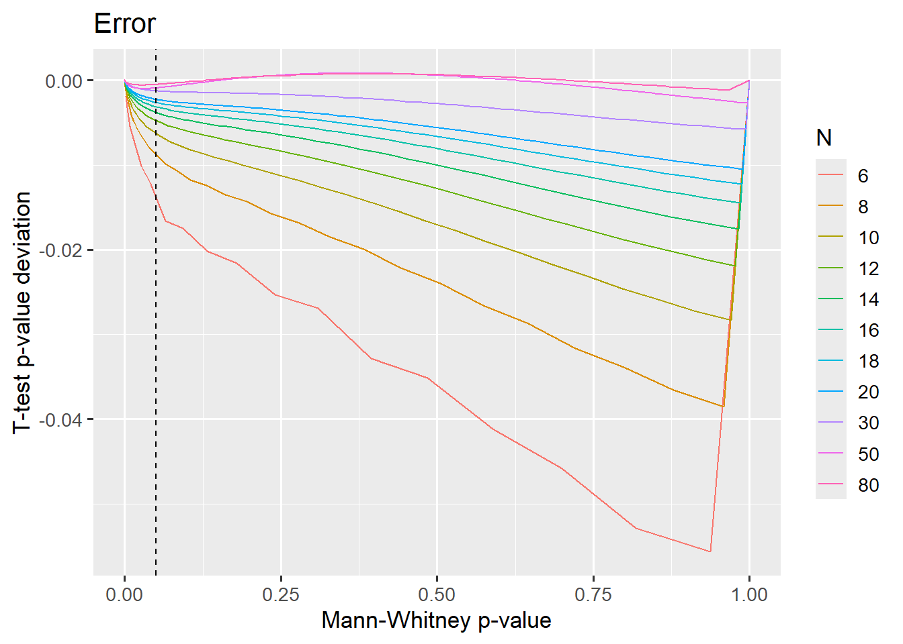
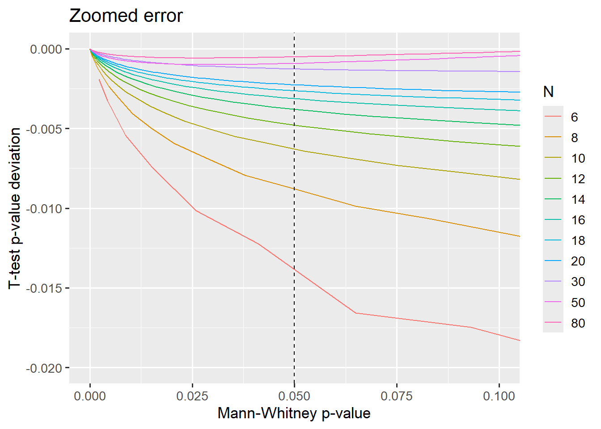
Linear models are also extremely robust. Consider the basic assumptions of a linear model
\[
\epsilon \approx i.i.d.\ N(\mu,\sigma)
\]
Although the residuals are meant to be homoscedastic (equal or constant across all groups), it turns out the model is robust of when the largest group variance is 4-10x larger than the smallest group variance and sample sizes are approximately equal (Blanca et al. 2018; Fox 2015; A. F. Zuur, Ieno, and Elphick 2010), though highly uneven group sizes begin to cause issues (Blanca et al. 2018).
Similarly, non-normal data is not an issue in an of itself (Knief and Forstmeier 2021). This is partially because the assumptions are focused on residuals, but also because the procedure is highly robust (Blanca et al. 2017). This finding further supports the graphical consideration of assumptions , especially since many tests for normality are conservative (samples are almost never perfectly normal, and slight deviations are easier to pick up with larger sample sizes despite the fact the central limit theorem suggests this is when the issue is least important) (A. F. Zuur, Ieno, and Elphick 2010; Shatz 2023).
How can residuals be normal when data is not?
This is a common question. Sometimes the outcome variable is not normally distributed due to the impact of various factors. Consider this example of sparrow weight from A. F. Zuur, Ieno, and Elphick (2010). The raw data may look like this…
Sparrows <-read.table(file="data/SparrowsElphick.txt", header=TRUE)Sparrows$fMonth<-factor(Sparrows$Month,levels =c(5, 6, 7, 8, 9, 10),labels =c("May", "June", "July", "August","Sept.", "Oct."))Sparrows$I1 <- Sparrows$fMonth =="June"| Sparrows$fMonth =="July"| Sparrows$fMonth =="August"library(ggplot2)ggplot(Sparrows[Sparrows$I1== T, ], aes(x=wt))+geom_histogram()+labs( x ="Weight (g)", main ="Weight of sparrows in study", y ="Frequency")
which is skewed (albeit slightly). However, if we consider the impact of month…
library(ggplot2)ggplot(Sparrows[Sparrows$I1== T, ], aes(x=wt, fill=fMonth))+geom_histogram()+labs( x ="Weight (g)", main ="Weight of sparrows in study", y ="Frequency", fill="Month")+facet_col(~fMonth)
We would find the residuals to be much better behaved.
Similarly, highly skewed data may arise due to unequal sample sizes (which may pose their own problems, but not outright), but models using this data may meet assumptions.
set.seed(8)example_skewed <-data.frame(Population=c(rep("a",40),rep("b", 30),rep(letters[3:4], each=15)), Growth =c(rnorm(40,1),rnorm(30, 4),rnorm(15, 7),rnorm(15,10)))ggplot(example_skewed,aes(x=Growth))+geom_histogram()+labs(y="Some value",title="Example of skewed data appearing due to unequal sample size")
`stat_bin()` using `bins = 30`. Pick better value with `binwidth`.
ggplot(example_skewed,aes(x=Growth, fill=Population))+geom_histogram()+labs(y="Some value",title="Example of skewed data appearing due to unequal sample size")+facet_col(~Population)
`stat_bin()` using `bins = 30`. Pick better value with `binwidth`.
Anova Table (Type III tests)
Response: Growth
Sum Sq Df F value Pr(>F)
(Intercept) 38.75 1 32.436 1.344e-07 ***
Population 1007.71 3 281.175 < 2.2e-16 ***
Residuals 114.69 96
---
Signif. codes: 0 '***' 0.001 '**' 0.01 '*' 0.05 '.' 0.1 ' ' 1
These issues have led some authors to argue violations of the linear model assumptions are less dangerous than trying new, and often less-tested, techniques that may inflate type I error rates (Knief and Forstmeier 2021; D. I. Warton et al. 2016). However, new techniques (or sometimes old techniques that are new to a given field) may be more appropriate when assumptions are clearly broken (D. Warton and Hui 2010; Reitan and Nielsen 2016; Geissinger et al. 2022). In this section we explore common-ish approaches for analyzing data when the assumptions of a linear model are broken. Our goal here is to introduce these methods. Each could be the focus of their own class, book, or much larger study. Fortunately most can be viewed as extensions to our existing knowledge, although many of the assumptions and techniques for them are less developed/still being argued about.
The various assumptions related to linear models may be prioritized on their relative importance. One such order is provided (roughly) by Gelman and Hill (2006).
Model validity
As noted in the multiple regression chapter, we only should investigate relationships we have a mechanism to explain
Linear relationship and additive effects of predictor variables
Errors are
independently distributed
identical (homoscedastic)
follow a normal distribution
Many datasets will violate multiple of these assumptions simultaneously, so addressing issues is often best resolved by understanding why this is happening.
Broken assumption: Linear relationship is inappropriate
A central (and often overlooked assumption) of linear models is that the relationship between the predictors (remember, not the actual data!) and the outcome variable is linear and additive. When the relationship is not linear, the resulting residuals are often not appropriately distributed as well.
What’s linear anyway?
To be clear, the linear model only focuses on the linear and additive relationship between the predictors and the outcome variable (this will become more important/obvious later in this section!). The model doesn’t know what the variables are. For that reason, we can add predictor variables to a model that are squares or cubes of predictors, or we can transform the outcome variable. We just need the \(Y = X\beta\) relationship to be additive and linear.
When non-linearity occurs, several options to address it exist. The best approach may depend on why the relationship is non-linear, as relationships among variables may be non-linear for a number of reasons. For example, the outcome may not actually be continuous (e.g. counts. proportions), and thus true linear relationships are not possible; outcomes may also be related to the predictors in different ways (e.g., logarithmic).
Transform the data (least advisable, sometimes)
One way to address non-linearity is to transform the data (typically focusing on the dependent variable) so that the resulting variable meets the linear model assumptions (and thus uses the strengths of linear models that we noted above). As shown above, our rank-based approaches are using a similar method (not technically the same, but it works for larger sample sizes). This approach was often used in the past (e.g., arc-sin transforms of proportion data, D. Warton and Hui 2010) and supported by various approaches. For example, the Box-Cox transformation helped researchers find the best way to transform data to reduce issues with the distribution of residuals; this method also tended to impact linearity and differences in variances.
Two things should be noted regarding this approach and transformations in general:
The Box-Cox approach requires a model - it still focused on transforming data so that residuals meet assumptions. Data should not be transformed before model assumptions are analyzed to ensure it is necessary.
Similarly (and already noted!). non-normal data may lead to models with normal residuals. However, normal data (or data transformed to be more normal) does typically lead to normal residuals, so if residuals are not normal transformations may help.
The transformed variable is now linear in respect to the predictors. This highlights the actual assumption of the model. Similarly, higher-terms (squares, cubes, etc) may be added to a linear model. The model does not care what the data represent - it only focuses on if linear relationships exist among them.
Transformations can make model interpretation and prediction difficult.
If the decision is made to transform the data, several approaches exist. Some are driven by the distribution of the data, and all depend on it. For example, log and related root transformations are useful for right-skewed data, but some can only be carried out for non-negative (e.g., square root) or strictly positive (e.g., log) values. To address this for log transformations, a small value is often added to 0 measurements.
Let’s use data (not residuals) to show how different distributions of data connect to q-q plots and consider possible fixes (always fit a model first for real analysis!). For example, we can return to our right-skewed blue jay data from the summarizing data chapter(idea from (Hunt, n.d.)) .
set.seed(19)blue_jays <-round(rbeta(10000,2,8)*100+runif(10000,60,80),3)ggplot(data.frame(blue_jays), aes(x=blue_jays)) +geom_histogram( fill="blue", color="black") +labs(title="Weight of Westchester blue jays",x="Weight (g)",y="Frequency")
Note the right-skewed data shows a convex curve on the Q-Q plot.
qqnorm(blue_jays)qqline(blue_jays)
To help you understand Q-Q plots, remember they are comparing the relative spread of data (quantiles) from a target and theoretical distribution. For right-skewed data, points are shifted right (both smallest and largest observations are larger than you would expect from a normal distribution).
Conversely, we could also return to our left-skewed cardinal data
`stat_bin()` using `bins = 30`. Pick better value with `binwidth`.
shows as a s-shape on the Q-Q plot
qqnorm(rochester)qqline(rochester)
because it is under-dispersed (has no tails, and thus the lower points are larger than expected and the higher points are smaller than expected). Alternatively, data may be over-dispersed, like this (fake) finch data where lower points are lower than expected and higher points are higher.
`stat_bin()` using `bins = 30`. Pick better value with `binwidth`.
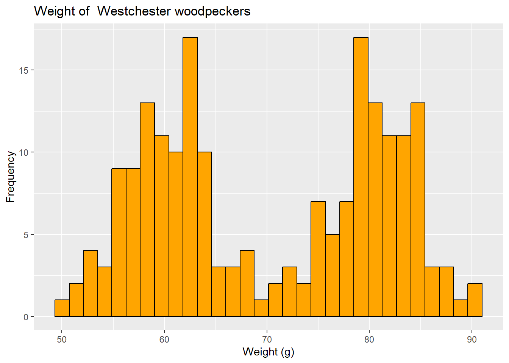
is under-dispersed due the shape of the distribution, but there also signs of other issues.
qqnorm(woodpeckers)qqline(woodpeckers)
Under-dispersion could also happen if data are bounded (e.g., by practicality or due to a measurement issue). Over-dispersion can similarly occur if the model does not account for variability (e.g., missing factors, non-linear relationship) and/or outliers, which might be related to the underlying form of the data (Payne et al. 2017) (more to come on this). In this way, over- and under-dispersion relate to both the linear relationship.
Different data require a different approach: Introducing generalized linear models
The linear relationship may be inappropriate because our data doesn’t fit it! For example, if we are modeling proportions, estimates less than 0 or below 1 do not make sense, but a linear model doesn’t account for that. The same issues arise for binary outcomes (outcome must be 0 or 1) and count data (where outcomes can’t be non-integer). Along with impacts on the assumption of linearity, data like this may also lead to unequal variances and lack of normality for residuals. While we may be able to transform the response variable to make relationships linear, another option is to translate the link function.
Although we haven’t fully explained it before, a linear model contains three components. There is always a random component that focuses on the distribution of the data. This typically requires a few parameters (or at least one!). For example, for normally-distributed data, the two parameters that describe the distribution are the mean and the variance. Note these parameters are independent (we covered all this when we introduced normality. There is also a systematic component, where a number of covariates relate linearly to a predictor. Finally, there is the link function, which connects that predictor to the data distribution (this maintains the linearity of the model). Notice this means the link connects to the distribution of the data, not the data itself (which is what transforming the data is doing).
So far we have focused on the mean of the data, and the estimate is the mean. For example, in simple linear regresssion we predict the mean response of \(Y\) for each level of \(X\). This is equivalent to predicting \(\mu\), so we can write
\(Y\)= \(X\beta\)
or
\(\mu\)= \(X\beta\)
where:
\(Y\) (or \(\mu\) is the predicted value of the response variable
\(X\) is the model matrix (i.e. predictor variables)
\(β\) is the estimated parameters from the data (i.e. intercept and slope). \(XB\) is called the linear predictor
Earlier we also had \(E\) , an error term that account for deviations in our data from the expected outcome. We still have error but will not write that for clarity at this point.
Since \(Y = \mu\), the link has been implied, so we can think of this as
\[\mu = \underbrace{X\beta}_{Linear~component}\]
owever, we can generalize this setup to include other distributions in the exponential family (and now others (“Applied Regression Analysis and Generalized Linear Models” 2022, ch. 15)). The exponential family is a group of distributions where the probability distribution follows a specific formula. While we won’t develop all the math, exponential family distributions all have a canonical parameter (the mean for Gaussian, or normal, data) and a dispersion parameter (the variance for normal data). In doing that, we predict
and link \(\eta\) to our true parameter of interest using a link function.
\[g(\mu) = \eta\]
The main idea is we can keep a systematic component with a linear relationship for data that doesn’t really have that relationship and that don’t fit the normal approximation. We call models using this approach generalized linear models (which are different than general linear models, which is another term used to describe our “regular” linear models). These models are also known as GLM or GLIM (we’ll use the GLM jargon here).
For example, we can consider binomial data where \(Y ∼ B(n, p)\). This type of data has to be between 0 and 1 (and only takes fractional values in between that depend on the sample size!). We introduced this type of data in the chapter introducing binomial data. If we use a basic linear model, we would predict outcomes that don’t match the data. However, instead of focusing on the \(p\) parameter like we did before, let’s consider the odds of something happening. We can estimate
\[
\mu = N*p
\]
(we introduced this normal approximation earlier too), and find the odds as
\[\text{odds}_i = \frac{\mu_i}{1-\mu_i}\]
this takes us to a 0 to +Inf scale for our predictor. We can then take the log of this outcome, which we call the logit
For this class I don’t expect you to derive the appropriate links. Common links for various types of data are shown below, and in R we can identify these using a family argument in the glm function (introduced below).
However, the major issue is realizing these links mean interpreting coefficient values requires an additional step to transform them back to impacts on the actual parameter of interest. Examples are provided below.
When should we use GLMs? These various data types (and some other distributions we’ll demonstrate) match some common real-world scenarios. Bolker (2008) has an excellent review of when various distributions should be used. The table below also lists some of the more common distributions and notes on their usage.
Connections between data distributions and real-world data
Distribution
Typical usage, notes, and examples
Continuous
Gaussian/normal
continuous variables, or variables connected to large sample sizes and not extreme values (remember the z-test approximation for \(\chi^2\) tests?)
Gamma
Amount of time until a certain number of events takes place (how long do you wait for a parking spot?); variance changes with mean; related to negative binomial
Exponential
amount of time for a single event to occur; related to geometric
Beta
distribution of success parameter in binomial trials with a-1 success and b-1 failures; bounded by 0 -1 (not inclusive)
Discrete
Bernoulli/binomial
data that can be divided into successes and failures
Poisson
Fits count data where all events are independent (random); Count data where low counts and 0’s are common
Negative binomial
Number of failures before a set number of successes occur; Poisson-ish where variance is larger than the mean (good for overdispersion!) or where the mean (and thus variance) varies
Geometric
Number of trials until you get a single failure
Combination
Beta binomial
Binomial-ish but the success parameter (and thus variance) varies across trials
Different distributions also have different relationships between the variance and mean (or between the canonical and dispersion parameter for distributions in the exponential family). For normal data, there is no relationship, so the variance is constant. This is why we have assumed homoscedasticity of residuals for linear models. This is not true for other families; for example, the variance in binomial data depends on the p parameter (as we noted in the chapter introducing binomial data), and for the Poisson distribution (used for count data) the variance is the mean.
will be useful. Any patterns may suggest missing predictors or lack of independence/correlation among measurements. Patterns in the residuals may also indicate the incorrect family has been chosen (A. Zuur et al. 2009, sec. 9.8.4); for families with fixed dispersion parameters, inspection of the estimated dispersion parameter can also be a related diagnostic.
What are residuals for a GLM?
Residuals for a Gaussian/normal GLM (what we’ve been doing) are easy to calculate. We simply subtract the estimate for each data point (which is the average for similar observations!) from the observed. However, though these raw or response residuals exist for GLM, they rarely make sense. Variance may increase with mean for some distributions, for example, or outcomes may be binary (so every residual is 0 or 1!).
To account for this, we could divide the residuals by the standard deviation of the observations. This normalizes the residuals and leads to Pearson residuals. Another option is based on something called deviance. Deviance is similar to sums of squares but based on likelihood (which we shortly see is what we use to test for significance in GLM); it can also be considered the generalized form of variance or residual sums of squares. It is calculated as the difference of log-likelihoods between the focal model and the saturated model (or a model that has a coefficient for every observation and thus will have perfect fit). Deviance residuals consider how important each point is to the overall deviance. You can also compare the deviance of a model to a perfect fit (no deviance/saturated) model and an intercept-only model (worst fit, DO) and generate a pseudo-R2 measure using the formula
\[
1-\frac{D}{D_O}
\]
This is known as McFadden’s pseudo-R2 value.
Another option are quantile residuals. These are the focus of the DHARMa package and should be uniformly distributed for appropriate models.
Once developed, GLMs can use most of the tools we developed for basic linear models. However, a few key differences exist. Estimation of parameters and significance for these models rely on maximum-likelihood methods. It should be noted that solving for coefficients also requires iterative approaches due to non-linearity; common methods (not described here) include the Newton-Raphson or Fisher scoring methods. The key point here for practice is any noted issues with optimization are due to this process. The ratio of likelihood values from various nested tests follow a \(\chi^2\) distribution and can thus provide a p-value to compare possible models as noted in introducing G tests.This may be represented as a Z test for single parameters (since a \(\chi^2\) distribution is a Z distribution squared - sometimes labelled a Wald test/statistic). F test reappear for distributions where we estimate the dispersion parameter (like the normal), but otherwise we can use the dispersion parameter to check that the right approach was taken.
As you may infer from the numerous distributions mentioned above, there are a variety of GLMs. Here we outline some of the more common ones. Each of these deserves a much fuller treatment - remember, the intent here is to get you to a place to where you can begin working with them. Harrison et al. (2018) (which also covers mixed models (coming up!)) provides an excellent review of these models, and fuller treatments are provided by A. Zuur et al. (2009) (chapters 8-11) and Fox (2016) (chapters 14 - 15). For each I provide the most relevant math, an example (or two), and some immediate extensions.
Logistic regression: Bernoulli and binomial outcomes
Logistic regression (D. Warton and Hui 2010) focuses on modelling yes/no or success/failure outcomes (Bernoulli or binomial data) using the logit link (thus logistic regression). As noted above, this type of data uses the logit link. This link also allows coefficients to be interpreted as odds and odds ratios (introduced in the comparing proportions among groups- we’ll continue to see connections to this chapter for logistic regression). For a given coefficient \(\beta\), the logit link also means we can say a 1 unit increase in that single variable leads to a change in the odds ratio of \(e^{\beta}\).
Some math if you want/need it
Assume we have a binary outcome \(y\) and one covariates \(x_1\). For this situation, the probability of a successful outcome ( \(y = 1\) ) is given by:
\[Pr(y_i = 1) = p = g^{-1}(X\beta)\]
where \(g^{-1}()\) is the inverse link function.
For the identity link, the interpretation of the \(\beta_1\) coefficient (remember,
If we want to convert the odds into probability, given a coefficient \(\alpha\) we would use the inverse logit link function (also known as the logistic function):
Since the inverse link is nonlinear, it is difficult to interpret the coefficient. However, we can look what happens to the differences for a one-unit change to \(x_1\):
As \(x_1\) increases by one unit, the odds increase by a factor of \(\exp(\beta_1)\). Note that the odds values here are considered when all other parameters are kept constant.
This also means no impact is shown as \(\beta = 0\), with positive and negative numbers implying increases or decreases in odds, which is convenient. Other link options (not discussed here) include the probit and complementary log-log approaches. For a final piece of math, note the dispersion parameter for binomial data is not estimated - it is assumed to be 1.
For example, Blais, Johnson, and Koprowski (2023) investigated how various factors impacted behavior in garter snakes (Thamnophis cyrtopsis).
Juan Carlos Fonseca Mata, CC BY-SA 4.0 <https://creativecommons.org/licenses/by-sa/4.0>, via Wikimedia Commons
One of their analyses considered how snake movement (labelled 0 for no movement, 1 for movement) differed among age classes (adults and juveniles).
behavior <-read.csv("data/database_Thamnophis_crytopsis_study - Copy of THCY_MH_BEH.csv",stringsAsFactors = T)behavior_table <-table(behavior$movement, behavior$ageclass)behavior_table
adult juvenile
0 29 29
1 14 16
You may recognize this analyses could be carried out using \(\chi^2\) tests.
chisq.test(behavior_table)
Pearson's Chi-squared test with Yates' continuity correction
data: behavior_table
X-squared = 0.0051228, df = 1, p-value = 0.9429
which indicate no impact of age class on movement (p=.9429). You (hopefully) also remember we mentioned the Yate’s correction (noted in the output) was due to using a continuous distribution to fit counts. If we remove it,
we find an answer that we can replicate using GLM (since the outcome is a 0 or 1 here!). We do this using the glm function in base R, which is very similar to the lm function; the only difference is we now note the distribution we are exploring using the “family” argument. Note Bernoulli data is considered a subset of binomial data and thus classified as “binomial”.
as_glm <-glm(movement~ageclass, behavior, family ="binomial")
We can then use our normal approach (including summary, Anova, and glht functions) to consider the outcomes. Checking assumptions is a little trickier than for linear models (as noted above). One major check is typically ensuring the dispersion parameter is correct. We can typically check the parameter by dividing the residual deviance by its associated degrees of freedom; this information is provided by the summary function (here, 112.84/86);
summary(as_glm)
Call:
glm(formula = movement ~ ageclass, family = "binomial", data = behavior)
Coefficients:
Estimate Std. Error z value Pr(>|z|)
(Intercept) -0.7282 0.3254 -2.238 0.0252 *
ageclassjuvenile 0.1335 0.4504 0.296 0.7669
---
Signif. codes: 0 '***' 0.001 '**' 0.01 '*' 0.05 '.' 0.1 ' ' 1
(Dispersion parameter for binomial family taken to be 1)
Null deviance: 112.93 on 87 degrees of freedom
Residual deviance: 112.84 on 86 degrees of freedom
(15 observations deleted due to missingness)
AIC: 116.84
Number of Fisher Scoring iterations: 4
For Bernoulli data like this, however, over-dispersion is not an issue (Molenberghs et al. 2012). For binomial and Poisson data, this should be approximately one. While we can still plot the model like we did for lms
plot(as_glm)
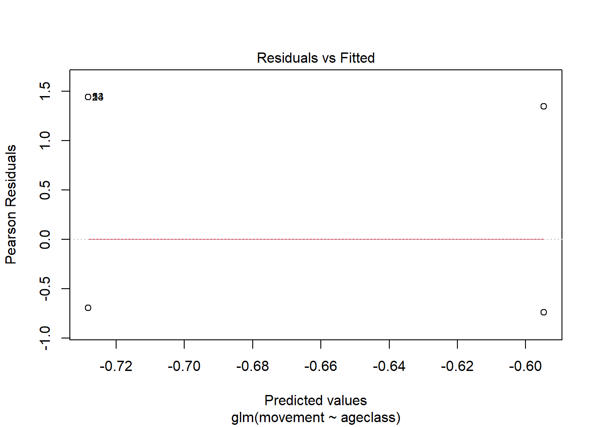
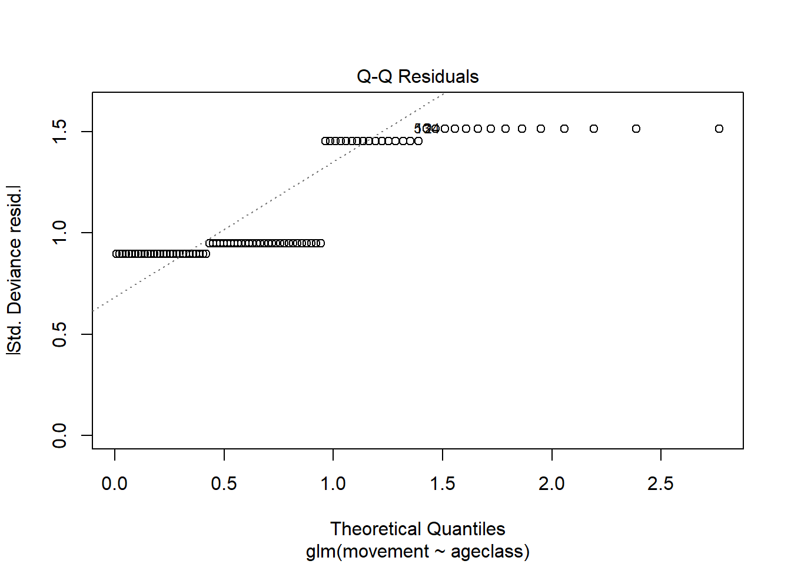
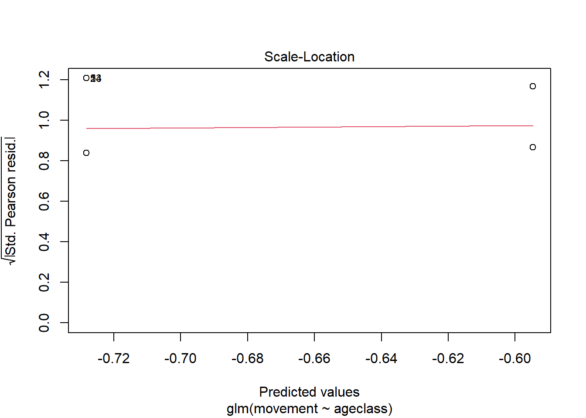
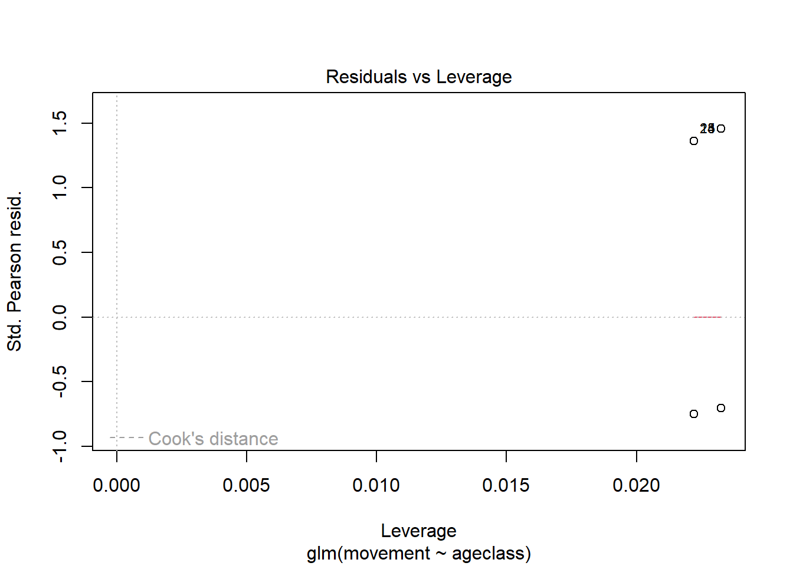
the findings may not be as useful. We only have 4 predicted values (why?) and thus only 4 residual values (why?), so we no longer expect the residuals to be normally distributed. Checking for patterns in these residuals is also complicated.
Another option (which also works for linear models) is offered by the performance package in R (another, related package not explored here, is DHARMa).
library(performance)check_model(as_glm)
Here we see no real issues with the model. We can also check for over-dispersion
check_overdispersion(as_glm)
# Overdispersion test
dispersion ratio = 1.018
p-value = 0.856
No overdispersion detected.
but remember for Bernoulli data (n=1) this isn’t an issue anyway.
We can note the impact of given factors using Anova
Anova(as_glm, type="III")
Analysis of Deviance Table (Type III tests)
Response: movement
LR Chisq Df Pr(>Chisq)
ageclass 0.087974 1 0.7668
which now uses likelihood-based tests by default. Similarly, the summary output notes details related to fitting the model (Number of Fisher scoring iterations). To interpret the coefficient from the glm, we need to consider the link function (here, the logit). If we backtransform the logit link function, we can actually say that juveniles had a \(e^\beta\) greater odds of movement than adults, which is equal to
exp(.1335)
[1] 1.142821
and very close to 1 (thus the high p-value given our small sample size). Note this means a coefficient of 0 means no impact, since
exp(0)
[1] 1
While this example simply replicates the \(\chi^2\) tests we learned earlier (deviations may arise when counts are low or high for any group, and thus \(\hat{p}\) approaches extreme values and breaks the assumptions!), the power of these models comes from the ability to consider multiple variables (which we couldn’t do before). These models are sometimes called log-linear models.
To consider this approach and extend glm to binomial data, consider work by Bueno, Machado, and Leite (2020). The authors carried out a series of experiments to determine how various factors impacted colonization of a host algae, Sargassum filipendula, by a small amphipod, Cymadusa filosa.
Rob Young, Centre for Biodiversity Genomics - CC - BY - NC - S
For one experiment, they stocked portions of aquariums with pieces of algal. Half the algae pieces had adult amphipods present(4 total; the species builds tubes to live on algae) while the other half had no adult residents. Juveniles (n=16 per patch) were initially placed on patches of natural substrate, artificial substrate, or bare areas(no substrate) in the aquarium. After 24 hours, the number of juveniles that colonized the focal algae were counted. Since the number of introduced juveniles was known, the number that did not colonize was also accounted for (raw data estimated from supplemental data given variation in sample size).
juvenile <-read.csv ("data/Supplemental_Data_Bueno_2020-S1-Presence of adults_lab.csv", stringsAsFactors = T)
since the adults column indicates the presence or absence of adults, let’s update it for clarity
This is an example of a factorial-design with the following hypotheses:
null hypothesis
HO: There is no impact on the habitat type juveniles start in on their likelihood to move
HO: There is no impact on adult presence in the new habitat on the likelihood of juveniles to move
HO: There is no interaction between the impacts of the habitat type juveniles start in and adult presence in the new habitat on the likelihood of juveniles to move
alternative hypothesis
HA: There is an impact on the habitat type juveniles start in on their likelihood to move
HA: There is an impact on adult presence in the new habitat on the likelihood of juveniles to move
HA: There is an interaction between the impacts of the habitat type juveniles start in and adult presence in the new habitat on the likelihood of juveniles to move
The outcome, however, is a proportion. Note we can fit a linear model to the data:
The assumptions don’t even look that bad, but note the residuals are over-dispersed. We could also assess the model using
check_model(juvenile_fit_lm)
which again shows some issues.
We also know the model will make predictions that aren’t logical (outcomes outside of the 0-1 range). For this reason we will use a generalized linear model (or a log linear model) to analyze the data. We can fit a glm using the binomial family.
juvenile_fit_glm <-glm(cbind(Colonized, Not_colonized) ~ adults*source.habitat, juvenile, family ="binomial")
The summary again allows us to estimate the dispersion parameter by dividing the residual deviance by its associated degrees of freedom, and we can now consider the impact of multiple variables (including interactions, which are significant here!).
summary(juvenile_fit_glm)
Call:
glm(formula = cbind(Colonized, Not_colonized) ~ adults * source.habitat,
family = "binomial", data = juvenile)
Coefficients:
Estimate Std. Error z value Pr(>|z|)
(Intercept) 1.84583 0.31063 5.942 2.81e-09 ***
adults -0.28417 0.09507 -2.989 0.002799 **
source.habitatnatural -3.88271 0.43669 -8.891 < 2e-16 ***
source.habitatnone 1.02207 0.55484 1.842 0.065459 .
adults:source.habitatnatural 0.46383 0.13819 3.356 0.000789 ***
adults:source.habitatnone -0.38722 0.15665 -2.472 0.013441 *
---
Signif. codes: 0 '***' 0.001 '**' 0.01 '*' 0.05 '.' 0.1 ' ' 1
(Dispersion parameter for binomial family taken to be 1)
Null deviance: 347.435 on 35 degrees of freedom
Residual deviance: 97.393 on 30 degrees of freedom
AIC: 186.64
Number of Fisher Scoring iterations: 5
The residual deviance/residual df (97.393/30) is ~ 3 when it is supposed to be 1. We’ll come back to this (and should), but just to show what we can do with these models, note we can use our Anova function to investigate outcomes.
We see that there is a significant interaction between the presence of adults and source habitat on the proportion of amphipods that move to colonize algae. Given this, we can follow our typical approach to significant interactions - break the data into subsets.
However, we may want to reconsider this model given the over-dispersion issue. What should we do? One option is to use an approach that estimates the dispersion parameter. Though not fully developed here (but a little more below), this approach uses a “quasi-binomial” family.
juvenile_fit_glm_quasi <-glm(cbind(Colonized, Not_colonized) ~ adults*source.habitat, juvenile, family ="quasibinomial")
We can investigate this model using our established protocols
summary(juvenile_fit_glm_quasi)
Call:
glm(formula = cbind(Colonized, Not_colonized) ~ adults * source.habitat,
family = "quasibinomial", data = juvenile)
Coefficients:
Estimate Std. Error t value Pr(>|t|)
(Intercept) 1.8458 0.5562 3.319 0.00238 **
adults -0.2842 0.1702 -1.669 0.10544
source.habitatnatural -3.8827 0.7819 -4.966 2.56e-05 ***
source.habitatnone 1.0221 0.9934 1.029 0.31177
adults:source.habitatnatural 0.4638 0.2474 1.875 0.07060 .
adults:source.habitatnone -0.3872 0.2805 -1.381 0.17760
---
Signif. codes: 0 '***' 0.001 '**' 0.01 '*' 0.05 '.' 0.1 ' ' 1
(Dispersion parameter for quasibinomial family taken to be 3.205612)
Null deviance: 347.435 on 35 degrees of freedom
Residual deviance: 97.393 on 30 degrees of freedom
AIC: NA
Number of Fisher Scoring iterations: 5
Since we estimated our dispersion parameter, we can also use F tests here
Anova(juvenile_fit_glm_quasi, type="III", test ="F")
Analysis of Deviance Table (Type III tests)
Response: cbind(Colonized, Not_colonized)
Error estimate based on Pearson residuals
Sum Sq Df F values Pr(>F)
adults 9.712 1 3.0298 0.091998 .
source.habitat 195.748 2 30.5326 5.842e-08 ***
adults:source.habitat 34.738 2 5.4184 0.009796 **
Residuals 96.167 30
---
Signif. codes: 0 '***' 0.001 '**' 0.01 '*' 0.05 '.' 0.1 ' ' 1
Poisson regression
Poisson regression focuses on count-based data. For simplicity (and to demonstrate the connections) here we note that we can almost always assess binomial data using the Poisson approach if we only focus on the number of successes. As you might imagine, this means we are ignoring data, which isn’t a great idea.
For example, we could consider the shrimp data like this
juvenile_fit_glm_poisson <-glm(Colonized ~ adults*source.habitat, juvenile, family ="poisson")
We could use our familiar protocol to assess the model.
plot(juvenile_fit_glm_poisson)
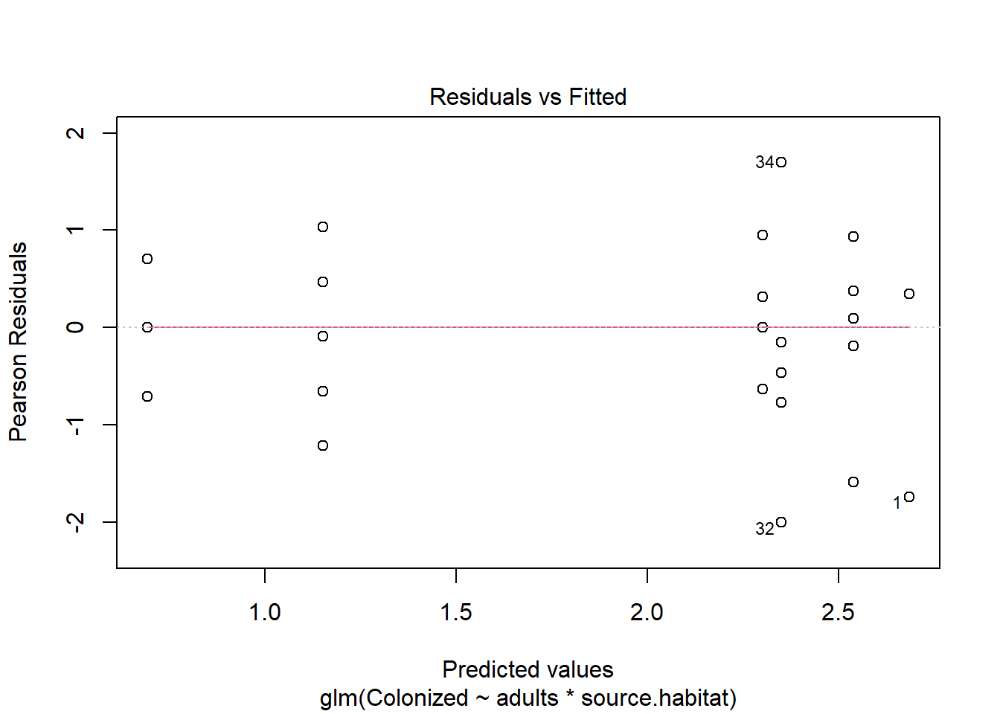
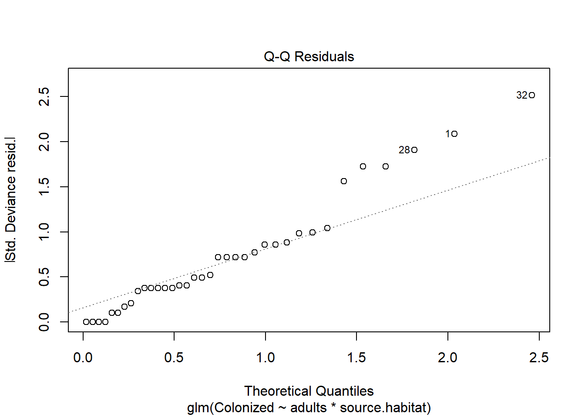
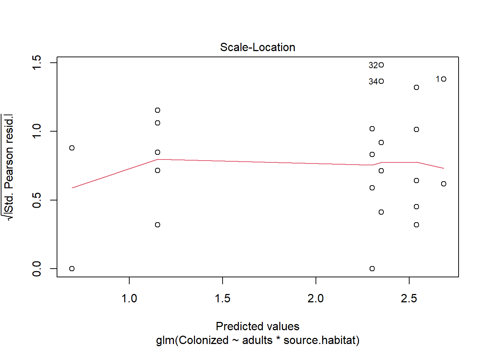
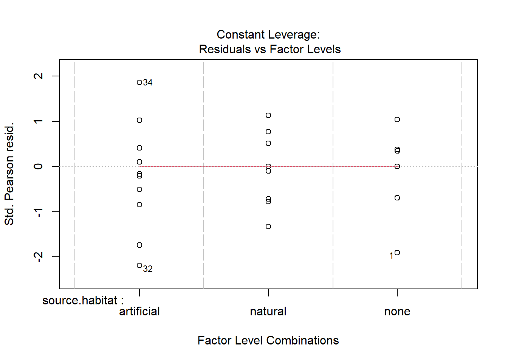
check_model(juvenile_fit_glm_poisson)
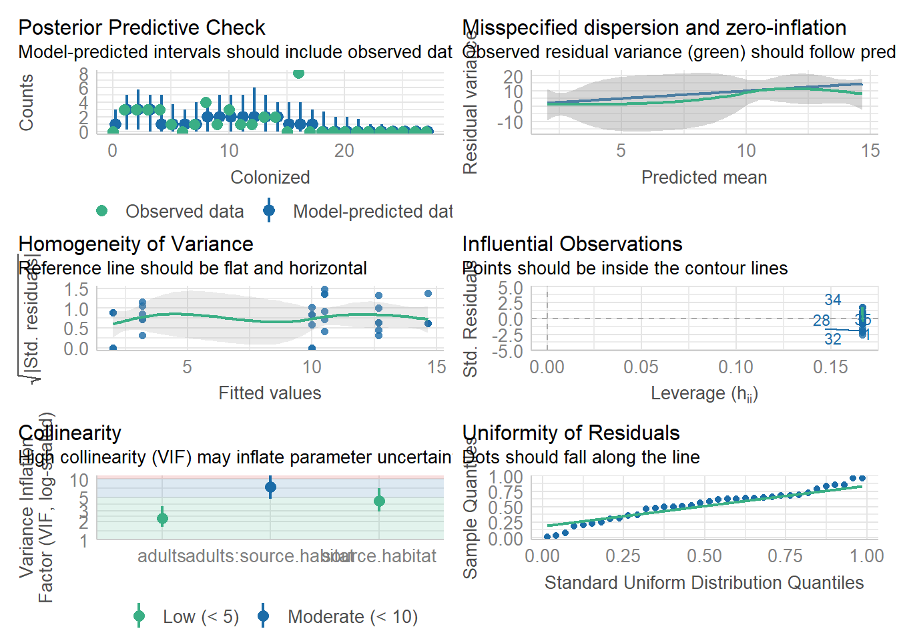
check_overdispersion(juvenile_fit_glm_poisson)
# Overdispersion test
dispersion ratio = 0.840
Pearson's Chi-Squared = 25.213
p-value = 0.715
No overdispersion detected.
summary(juvenile_fit_glm_poisson)
Call:
glm(formula = Colonized ~ adults * source.habitat, family = "poisson",
data = juvenile)
Coefficients:
Estimate Std. Error z value Pr(>|z|)
(Intercept) 2.53897 0.11471 22.134 < 2e-16 ***
adults -0.04690 0.04260 -1.101 0.271
source.habitatnatural -1.84583 0.31063 -5.942 2.81e-09 ***
source.habitatnone 0.14660 0.15659 0.936 0.349
adults:source.habitatnatural 0.16178 0.10155 1.593 0.111
adults:source.habitatnone -0.04885 0.05972 -0.818 0.413
---
Signif. codes: 0 '***' 0.001 '**' 0.01 '*' 0.05 '.' 0.1 ' ' 1
(Dispersion parameter for poisson family taken to be 1)
Null deviance: 133.282 on 35 degrees of freedom
Residual deviance: 27.223 on 30 degrees of freedom
AIC: 174.77
Number of Fisher Scoring iterations: 4
Similar to a binomial model, we can exponentiate parameter values to aid interpretation, but this time it means how increasing the measured value by 1 leads to a multiplicative change in the outcome. Again, a coefficient value of 0 means no impact.
So which is right? Here I might argue that “losing” data in the Poisson approach justifies the binomial (or quasi-binomial) approach.
The Poission distribution also assumes a dispersion parameter of 1. When this is not true, options include using a quasi- approach (quasipossion) or a negative binomial GLM.
Negative binomial regression
Similar to poisson, but an additional parameter allows the mean to not be equal to the variance. Packages to build these models include MASS(glm.nb function).
Gamma regression
For an example of continuous data using glms, consider the work by Li et al. (2024) on how humidity impacted responses to heat stress in parasitoids (Venturia canescens) and their hosts (Plodia interpunctella, Indian meal moths). Eggs were placed in incubators kept at ambient or increased humidity levels. Half of each group was parasitized during their 4th instar. Parasitized eggs were then exposed to no heat stress or stress for 6 or 72 hours in their 4th or 5th instar phase. Multiple traits in host and parasitoid were then measured.
Parasitic wasp ; image by Slimguy, CC BY 4.0 <https://creativecommons.org/licenses/by/4.0>, via Wikimedia Commons
Indian meal moth larvae ; Public domain via Wikimedia Commons
but the residuals are clearly overdispersed and may be increasing with the mean.
plot(time_model)
This makes sense as the data is bounded. Negative development times are not possible, and we might assume that as the average development date increases, there is more room for variability (so variance is not constant). A gamma distribution can help these issues.
time_model_gamma <-glm(develop_time~Humidity*Duration, wasp, family = Gamma)check_model(time_model_gamma)
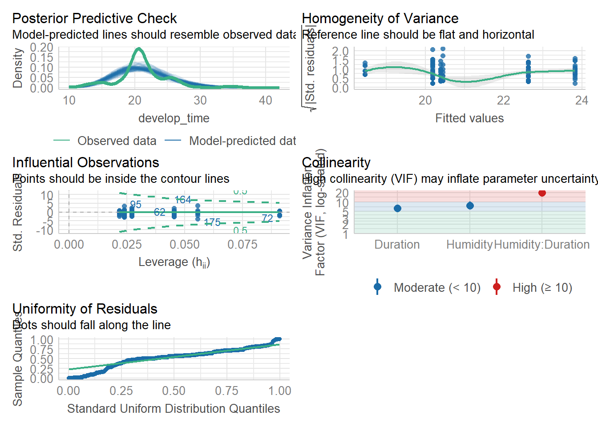
and AIC suggests it is very slightly better (remember, linear models are very robust!).
Results indicate heat stress, but not humidity, impact wasp development time. Since there are three levels, we could use post hoc tests to determine which treatments differ from others.
Simultaneous Tests for General Linear Hypotheses
Multiple Comparisons of Means: Tukey Contrasts
Fit: glm(formula = develop_time ~ Humidity + Duration, family = Gamma,
data = wasp)
Linear Hypotheses:
Estimate Std. Error z value Pr(>|z|)
L - C == 0 -0.007440 0.001938 -3.839 0.000357 ***
S - C == 0 -0.001461 0.001912 -0.764 0.721799
S - L == 0 0.005979 0.001373 4.355 < 1e-04 ***
---
Signif. codes: 0 '***' 0.001 '**' 0.01 '*' 0.05 '.' 0.1 ' ' 1
(Adjusted p values reported -- single-step method)
This suggests the longest duration is signifcantly different than the others and has a lower value. Similary, let’s consider the coefficients.
summary(time_model_gamma)
Call:
glm(formula = develop_time ~ Humidity + Duration, family = Gamma,
data = wasp)
Coefficients:
Estimate Std. Error t value Pr(>|t|)
(Intercept) 0.0505499 0.0018403 27.468 < 2e-16 ***
HumidityNH 0.0003849 0.0012771 0.301 0.763501
DurationL -0.0074400 0.0019381 -3.839 0.000174 ***
DurationS -0.0014607 0.0019124 -0.764 0.446030
---
Signif. codes: 0 '***' 0.001 '**' 0.01 '*' 0.05 '.' 0.1 ' ' 1
(Dispersion parameter for Gamma family taken to be 0.03109605)
Null deviance: 6.2813 on 175 degrees of freedom
Residual deviance: 5.5285 on 172 degrees of freedom
(404 observations deleted due to missingness)
AIC: 968.81
Number of Fisher Scoring iterations: 4
Coefficients indicate the highest predicted value for control conditions (remember, that’s the intercept condition), followed short and long stress events. This would suggest that heat stress lowers development time…but remember the graphed data (here with humidity impacts removed).
Warning: Removed 404 rows containing non-finite outside the scale range
(`stat_summary()`).
Warning: Removed 404 rows containing missing values or values outside the scale range
(`geom_point()`).
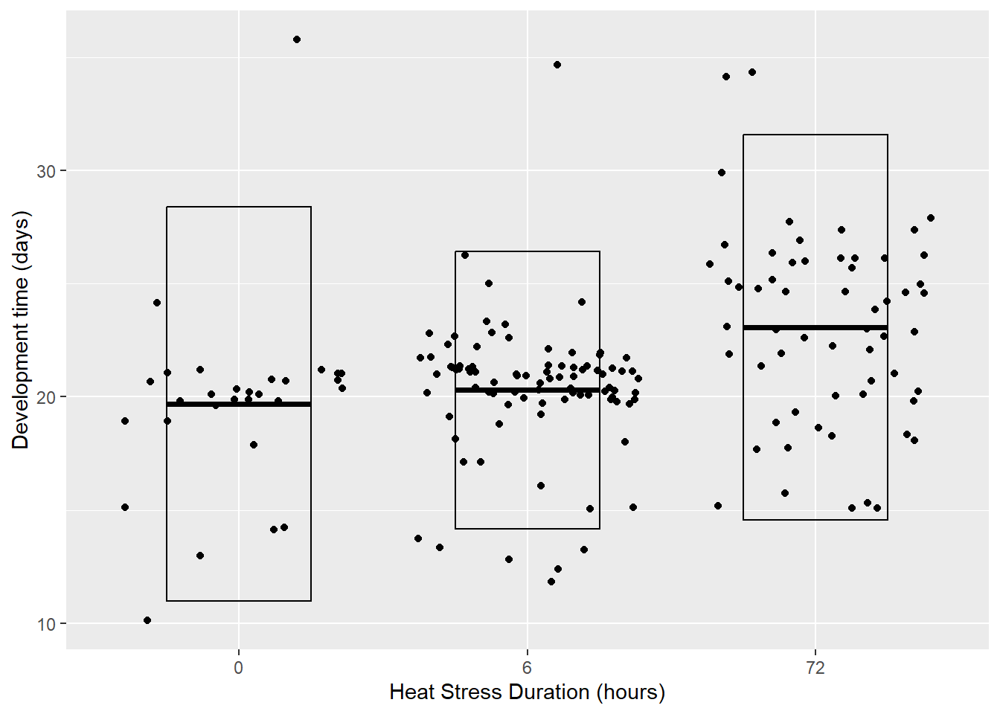
Here we see that the highest heat stress level is associated with a longer wasp development time. Why do the results seem contradictory?
Again, this is due to the link function. For gamma models, the link is the inverse, so to determine the impact of a given coefficient on the raw data we would combine the intercept and coefficients in this way.
1/(.05-.007)
[1] 23.25581
1/(.05-.001)
[1] 20.40816
1/(.05)
[1] 20
Which indicates a longer development time (23 days vs 20) for wasps exposed to more heat stress.
Beta regression
Beta regression (Geissinger et al. 2022) is similar to logistic/binomial regression, but it focuses on true proportion data. In other words, whereas binomial regression focuses on modeling the number of successes in a given number of trials, beta regression focuses on the distribution of the probability parameter itself. If we are exploring this, it means we know the value can’t really be 0 or 1 (or we would have no variation), so responses may not be 0 or 1 (they must be in this range). Since “accidents” do happen and may lead to zeroes or ones in the data, there are options for adjusting the data to account for these issues (p. 11, Corlatti 2021). This is useful if the outcome is between 0 and 1 (e.g. % cover, % nitrogen). Packages that can do beta analysis in R include betareg and glmmTMB.
Non-linear options
All the options above still rely on a linear-link property: the systematic component of the model has a linear relationship to a predictor (in glm, we just transformed this back to the raw data as needed). However, we may instead actually want a non-linear relationship between our predictors and outcome. In fact, we may actually want to compare various linear and non-linear fits (e.g., Dornberger et al. 2016)or determine parameter values for a specified relationship.
For example, many fisheries use length of organisms as baseline data because it’s easy to collect, but we may want to use length data to estimate mass. Determining this length-weight relationship may be useful to fisheries management.
We know from basic principles the relationship between length and mass is probably not linear, because length is only capturing growth in one dimension, whereas mass is likely more closely related to volume. Given this, we might decide to fit the equation
\[
Weight =a*Length^B
\] to determine this relationship.
A group (Gosnell et al. 2023) used data collected on whelks from multiple locations to consider the parameter values for this model (only 2 locations used here).
The non-linear fit is obviously better. Parameters can be found using
summary(whelk_nls)
Formula: Mass ~ b0 * Shell.Length^b1
Parameters:
Estimate Std. Error t value Pr(>|t|)
b0 2.134e-04 5.737e-05 3.719 0.000228 ***
b1 2.855e+00 5.576e-02 51.195 < 2e-16 ***
---
Signif. codes: 0 '***' 0.001 '**' 0.01 '*' 0.05 '.' 0.1 ' ' 1
Residual standard error: 24.24 on 410 degrees of freedom
Number of iterations to convergence: 5
Achieved convergence tolerance: 7.614e-07
(61 observations deleted due to missingness)
Comparing parameters among sites is slightly more difficult, as dummy variables need to be included for each site; alternatlvely, data can be transformed and a linear model considered.
Notice this approach is mechanistic - we set the relationship and found the best parameters. There are other ways to build non-linear relationships, however, and some allow algorithms to find the best relationship. While these may not be hypothesis-driven, they may prove very useful for predictions. One example of this approach is known as generalized additive modelings (or gams). These models can fit multiple functions to the data, including piece-wise functions. In this example we consider how a splines, or smooth, polynomial curves that are fit to various portions of the data and then “knotted” together, fit the data.
whelk_gam_spline <-gam(Mass ~s(Shell.Length), data = whelk)summary(whelk_gam_spline)
A major issue for linear models is when predictors are co-linear. Mathematically speaking, perfect collinearity occurs when any column of the design (X) matrix can be derived by combining other columns. Perfect collinearity will lead to a message noting singularity issues, which is R’s way of telling you the matrix isn’t invertible (which it has to be to solve the equation).
Even partial collinearity will lead to an increase in Type II errors (A. F. Zuur, Ieno, and Elphick 2010). To put it simply, partitioning variance among related predictors is hard. For this reason, a few approaches may be used.
Check for issues
The first step is identifying issues. From the outset, relationships among predictor variables can be assessed using the pairs function in R. If two variables are highly correlated (r2 > .8 is a general limit), only one should be included in the model. Similarly, variance inflation factors (vif) can be assessed for the final and other models to consider this issues (all this is covered in the previous chapter that introduces multiple regression. If this occurs, some variables may need to be removed from consideration.
Multivariate methods
Covered in later chapters, but if predictors (or multiple outcomes) are correlated, methods can be used to derive statistically independent predictors (though they may be hard to interpret).
In respect to measured outcomes
When outcome variables are linked together, a few options exist. Note this issue may be obvious from checks of assumptions, but it also may be due to experimental design.
Include random effects
We start with an approach that models connections among variables via random effects.
Consider this toy example. In order to investigate impacts of predator stress on oysters, oysters are exposed to predator cues by dropping in water from tanks with 0, low (.25/m2), or high (2/m2) densities of predators. After two months, changes in oyster shell length (growth) was measured. Here we make the data.
How would you analyze this data? If we assume that each oyster was in its own space (and received cues from a unique predator) and is thus an independent measurement, you hopefully recognize this as a lm/ANOVA that you know how to analyze. If you need a reminder, see the chapter on ANOVAs.
This experimental approach takes a lot of space (and time!). If I have a large tank, I may instead decide to put a few more oysters in there. At an extreme, let’s instead use one tank was used for each predator level, with twenty-five oysters measured in each tank.However, this means our measurements are connected; remember blocking and paired tests? So our data may look more like
set.seed(19)n_levels <-3replicates_each_level <-1J = n_levels * replicates_each_level # number of tanksn_j =25# number of observations per tank sigma_b = .15# variance of the random interceptsigma_e = .15# variance of the random noisefixed_effect =-.05# population-level effectfixed_intercept =5# population-level interceptexperiment_with_3_tanks <-data.frame(tank =rep(sample(letters[1:J]),each=n_j), # puts these in random order!b_i =rep(rnorm(J, mean =0, sd = sigma_b), each=n_j),# Generate predictor X =rep(c(0,1,2), each= n_j*J/3))experiment_with_3_tanks$predator_cue <-revalue(as.character(experiment_with_3_tanks$X), c("0"="none", "1"="low", "2"="high"))experiment_with_3_tanks$predator_cue <-factor(experiment_with_3_tanks$predator_cue, levels =c("none", "low", "high"))# Generate outcome from predictor & subject-specific interceptexperiment_with_3_tanks$growth <- fixed_intercept + experiment_with_3_tanks$b_i + fixed_effect* experiment_with_3_tanks$X +rnorm(n_j*J, mean =0, sd = sigma_e)experiment_with_3_tanks <- experiment_with_3_tanks[order(experiment_with_3_tanks$tank),]
Now we are stuck with a question. Do I have n=75 (the number of oysters) or n=3 (the number of tanks) for the experiment? Ignoring linkages leads to pseudopreplication, an issue that has been noted in ecology and other fields (Hurlbert 1984; Heffner, Butler, and Reilly 1996; Lazic 2010).
There are several ways to deal with this. Here we explore each for our oyster example.
Find average for each unit
One way of doing this focuses on the average for each unit
average_analysis_3_tanks <-lm(growth~predator_cue, averaged_experiment_3_tanks)Anova(average_analysis_3_tanks, type ="III")
Error in Anova.lm(average_analysis_3_tanks, type = "III"): residual df = 0
but that leads to an issue! Since we only get 3 average outcomes and our model requires 3 degrees of freedom (consider why), we are left with no “noise” to make the denominator for our F ratio! This is partially due to a lack of replication - we’ll fix that now.
set.seed(19)n_levels <-3replicates_each_level <-4J = n_levels * replicates_each_level # number of tanksn_j =25# number of observations per tank sigma_b = .15# variance of the random interceptsigma_e = .15# variance of the random noisefixed_effect =-.05# population-level effectfixed_intercept =5# population-level interceptexperiment_with_12_tanks <-data.frame(tank =rep(sample(letters[1:J]),each=n_j), # puts these in random order!b_i =rep(rnorm(J, mean =0, sd = sigma_b), each=n_j),# Generate predictor X =rep(c(0,1,2), each= n_j*J/3))experiment_with_12_tanks$predator_cue <-revalue(as.character(experiment_with_12_tanks$X), c("0"="none", "1"="low", "2"="high"))experiment_with_12_tanks$predator_cue <-factor(experiment_with_12_tanks$predator_cue, levels =c("none", "low", "high"))# Generate outcome from predictor & subject-specific interceptexperiment_with_12_tanks$growth <- fixed_intercept + experiment_with_12_tanks$b_i + fixed_effect* experiment_with_12_tanks$X +rnorm(n_j*J, mean =0, sd = sigma_e)experiment_with_12_tanks <- experiment_with_12_tanks[order(experiment_with_12_tanks$tank),]
Now we can find the average for each of our 12 tanks.
This is one way to manage dependent data, but you have reduced your data to a much smaller number of points and are not getting credit for all your work!
Blocking
The blocking approach we’ve already covered works might seem appropriate here.
blocking_analysis <-lm(growth~predator_cue+tank, experiment_with_12_tanks)Anova(blocking_analysis, type ="III")
Error in Anova_III_lm(mod, error, singular.ok = singular.ok, ...): there are aliased coefficients in the model
but it doesn’t work. Why? This error means our model matrix has collinearity issues. We can actually see where
though the output is confusing. In general, the issue here is each container only measures one level of predator risk, so risk and container are completely confounded. It’s because the container variable can fully “explain” the predation levels - this goes back to the singularity issues we discussed in introducing linear models. This is because each container only contributes to one level of other traits. If instead each unit contributed to multiple levels, like in our feather experiment, as show below) this isn’t an issue.
Random effects
Our final option takes a new approach. It considers the units we measured as simply a potential samples from a larger population. We use the information from the units we measured to consider the distribution of sample effects we might see (the variance we would expect among containers). For this to work, you probably want 5+ levels of the unit variable. This is because we are using the means to estimate variance (confusing?). For factors with <5 levels, random effects likely offer no benefit (Gomes 2022).
The impact of unit is then included in the model as a random effect(“Introduction to Linear Mixed Models,” n.d.). When models contain fixed (what we’ve done before) and random effects, we call them mixed-effects models. To update our our model, we now have
\[
\begin{split}
Y=X\beta+ Z\mu+\epsilon , \textrm{ where }\\
\textrm{Y is our observations (an nx1 matrix)}\\
\textrm{X is a matrix showing our explanatory variables (an nxk matrix)}\\
\beta \textrm{ is our coefficient matrix(an kx1 matrix)}\\
Z \textrm{ is a coefficient matrix that signifies each unit (an n x (n * number or random effects) matrix)}\\
\mu \textrm{ is our coefficient matrix for each unit (an (n * number of random effects) x 1 matrix) }\\
\epsilon \textrm{ is a matrix (an nx1) of residuals)}\\
\end{split}
\]
Two common packages for carrying out this analysis in R are the nlme and lme4 packages. We will focus on the lme4 package here. Random effects can be entered in the lmer (linear mixed-effects regression) function and specified as (1|Grouping Unit). One nice thing about lme4 is it will handle crossed and random effects on it’s own as long as you don’t repeat unit names. For example, we could note
The main assumption we add here is that the random effects are normally distributed. This means we can estimate all the random parameters at a single level (we will stick with one level for now) using just one degree of freedom.
Once we build these models,, we need to consider assumptions.This should be checked at each level of grouping.
check_model(mixed_analysis)
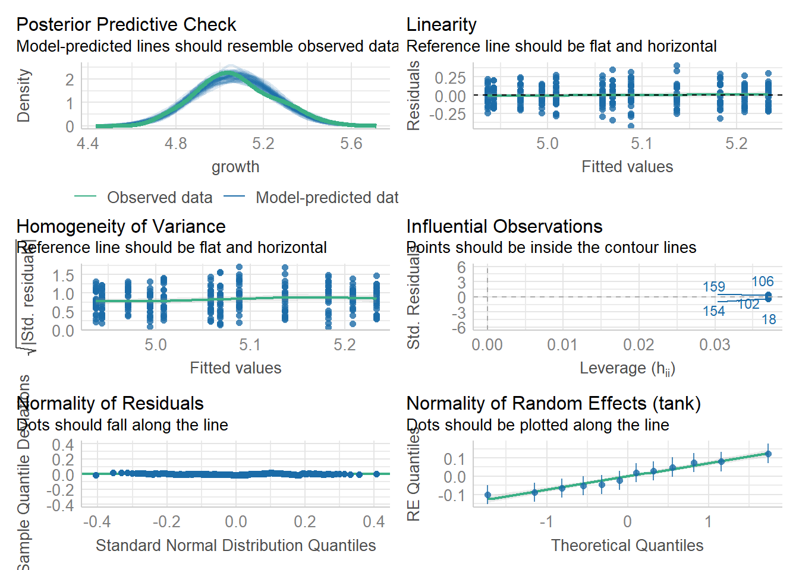
Another package, DHARMa does this for models by considering quantile residuals, which should be flat/uniform when a model fits the data.
library(DHARMa)simulateResiduals(mixed_analysis, n =1000, plot =TRUE)
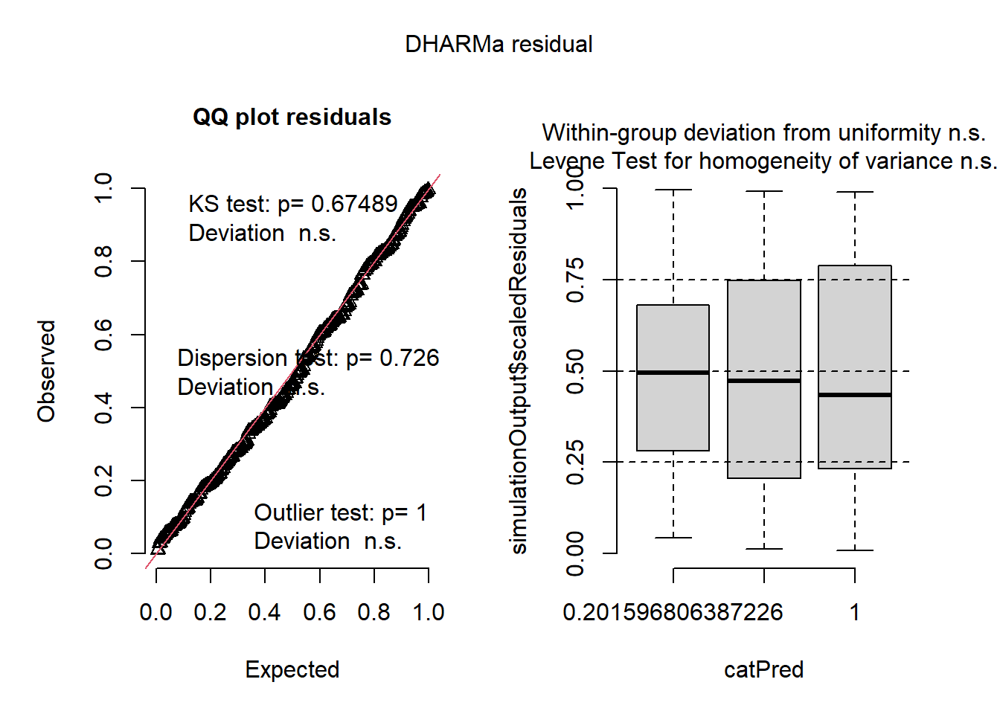
Object of Class DHARMa with simulated residuals based on 1000 simulations with refit = FALSE . See ?DHARMa::simulateResiduals for help.
Scaled residual values: 0.371 0.707 0.816 0.828 0.046 0.959 0.583 0.261 0.537 0.077 0.348 0.088 0.663 0.874 0.856 0.948 0.433 0.012 0.832 0.429 ...
For simple models like this one, the check_mixed_model function (provided below) also offered an automated approach. This function was used before some of the newer packages used above were demonstrated.
check_mixed_model <-function (model, model_name =NULL) {#collection of things you might check for mixed modelpar(mfrow =c(2,3))if(length(names(ranef(model))<2)){qqnorm(ranef(model, drop = T)[[1]], pch =19, las =1, cex =1.4, main=paste(model_name, "\n Random effects Q-Q plot"))qqline(ranef(model, drop = T)[[1]]) }plot(fitted(model),residuals(model), main =paste(model_name, "\n residuals vs fitted"))qqnorm(residuals(model), main =paste(model_name, "\nresiduals q-q plot"))qqline(residuals(model))hist(residuals(model), main =paste(model_name, "\nresidual histogram"))}
check_mixed_model(mixed_analysis)
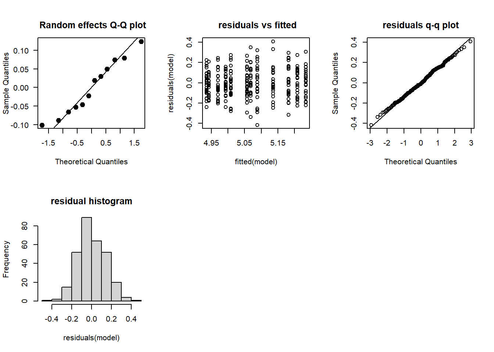
This works well in that we can see the random effects and residuals are normally distributed.
We can now follow our normal protocol and consider the outcome using our summary command -
note the output denotes we have 225 observations and 9 grouping levels.
summary(mixed_analysis)
Linear mixed model fit by REML ['lmerMod']
Formula: growth ~ predator_cue + (1 | tank)
Data: experiment_with_12_tanks
REML criterion at convergence: -285.5
Scaled residuals:
Min 1Q Median 3Q Max
-2.95584 -0.68320 -0.09694 0.73893 2.88985
Random effects:
Groups Name Variance Std.Dev.
tank (Intercept) 0.007214 0.08493
Residual 0.019931 0.14118
Number of obs: 300, groups: tank, 12
Fixed effects:
Estimate Std. Error t value
(Intercept) 5.15897 0.04475 115.278
predator_cuelow -0.10021 0.06329 -1.583
predator_cuehigh -0.17006 0.06329 -2.687
Correlation of Fixed Effects:
(Intr) prdtr_cl
predatr_clw -0.707
predtr_chgh -0.707 0.500
We can also still use Anova to get p-values. However, these are now calculated by default using likelihood-associated \(\chi^2\) tests.
You can also ask for F tests, but note the degrees of freedom associated with these tests is not clear. It’s somewhere between the “average” and “ignore” approach used above. You also will see these 2 approaches give different answers.
Anova(mixed_analysis, type ="III", test="F")
Analysis of Deviance Table (Type III Wald F tests with Kenward-Roger df)
Response: growth
F Df Df.res Pr(>F)
(Intercept) 13289.0258 1 9 1.412e-15 ***
predator_cue 3.6485 2 9 0.06912 .
---
Signif. codes: 0 '***' 0.001 '**' 0.01 '*' 0.05 '.' 0.1 ' ' 1
Simultaneous Tests for General Linear Hypotheses
Multiple Comparisons of Means: Tukey Contrasts
Fit: lmer(formula = growth ~ predator_cue + (1 | tank), data = experiment_with_12_tanks)
Linear Hypotheses:
Estimate Std. Error z value Pr(>|z|)
low - none == 0 -0.10021 0.06329 -1.583 0.2529
high - none == 0 -0.17006 0.06329 -2.687 0.0197 *
high - low == 0 -0.06985 0.06329 -1.104 0.5118
---
Signif. codes: 0 '***' 0.001 '**' 0.01 '*' 0.05 '.' 0.1 ' ' 1
(Adjusted p values reported -- single-step method)
Note our results indicate we can only see differences between the high and control treatments. This is due to the noise we introduced in the data (which always happens in the real world) in addition to the random effect issues.
Is this really new?
It should be noted that random effects match up to paired t-tests and blocking approaches for simple experiments.Remember our feather experiment (example and data provided by McDonald (2014))?
Paired t-test
data: feather_wide$Odd and feather_wide$Typical
t = -4.0647, df = 15, p-value = 0.001017
alternative hypothesis: true mean difference is not equal to 0
95 percent confidence interval:
-0.20903152 -0.06521848
sample estimates:
mean difference
-0.137125
Analysis of Deviance Table (Type III Wald F tests with Kenward-Roger df)
Response: Color_index
F Df Df.res Pr(>F)
(Intercept) 41.816 1 28.457 4.88e-07 ***
Feather_type 16.521 1 15.000 0.001017 **
---
Signif. codes: 0 '***' 0.001 '**' 0.01 '*' 0.05 '.' 0.1 ' ' 1
All same if we use least-squares approaches (not the default \(\chi^2\) tests that match likelihood-based methods).
More random effects
What we have demonstrated above is a random intercepts model. This means each group (tank in this case) differs slightly. This approach works well when we are considering impacts of categorical predictors (like an ANOVA). If we are considering slopes, we can also have random slope models, where every group responds slightly differently to the continuous predictor. You can also combine these into models with both random intercepts and random slopes.
As an example, consider work by O’Connor et al. (2007) on relationship between pelagic larval duration (pld) and temperature (exampled developed in Midway (n.d.)). The group collected data from 214 observations.
The average model looks ok, but the mixed-model is struggling with variances that are increasing over time. To follow the paper’s lead (despite what we wrote above), let’s log-transform the data.
Here we see a clear benefit (if we trust p-values…) of including all our data. However, we might also think that each species has a unique relationship to temperature. This would be a random slopes models (notice we no longer have a constant intercept per(line) species, but instead have a 0.
Which should we use? A. Zuur et al. (2009) recommends fitting a maximal model (all the fixed effects we might want to include, like starting at top-down approach) to the data and then comparing these using AIC.
and note a significant impact of temperature on pelagic larval duration. This is another example of how blocking may have missed this, unless we considered interactions…
which would have been harder to interpret given our lack of concern about species.
Consider a correlation structure: The bigger picture
Though not developed here (for now), random effects are an example of a correlation structure. We could also consider linkages among our data in different ways. This is common in spatial statistics and where time is involved. When data are connected in this way, various correlation structures can be included in the model.
Errors are not equal among groups
Issues with errors not being equal among groups is often tied to other issues, like non-linearity or the nature of the data, which we have addressed above. Correlation structures can also be used to address issues with errors are not equal among groups.
One example of this option is to use weighted-least squares regression (also known as generalized least squares) - this approach specifically helps when residuals are not evenly distributed among groups (or when a funnel/cone appears when you plot the model to check assumptions). For example, we could take the model on below-ground biomass that we developed in the More Anovas chapter. As a reminder, Valdez et al. (2023) wanted to consider the impact of top-down (snail grazing) and bottom- up (nutrient availability) on marsh plant (Spartina alterniflora) growth. To do this, they assigned plots to one of 3 grazer treatments and one of 2 nitrogen treatments. We focused on the impact of these treatments on standing dead mass and noted a funnel-shape when reviewing the residuals.
To address the, we can use weighted least squares. This approach assume you built the model and then noted an issue with heteroscedasticity. To use, we can calculate a weight for each residual that is based on its variance. Doing this requires an iterative process similar to those used for estimation for generalized linear models (we’ll get to these) - below makes a value that increases with low variance.
Why not just always do this? Because weighted least squares implicitly assumes we know the weights. We are actually estimating them, so small datasets may lead to bad estimates and outcomes.
For another example (from A. Zuur et al. (2009) from Smith et al. (2005) ), we could consider the seasonal relationship between the testis weight and dorsal mantle length of the squid Loligo forbesii.
Restored lithograph of Loligo forbesii. Public domain.
Shows some issues. We see some over-dispersion,but more importantly there is a funnel-shape to the data. This means variance is increasing with mean. We can also see this in
check_model(squid_lm)
simulateResiduals(squid_lm, n =1000, plot =TRUE)
Object of Class DHARMa with simulated residuals based on 1000 simulations with refit = FALSE . See ?DHARMa::simulateResiduals for help.
Scaled residual values: 0.253 0.791 0.485 0.596 0.759 0.772 0.204 0.738 0.704 0.748 0.817 0.635 0.926 0.836 0.331 0.843 0.654 0.579 0.483 0.667 ...
Unlike when we measured the same organism or unit multiple times, this time the reason for variation is clear - some months have more spread than other
ggplot(squid_lm, aes(x = MONTH, y = .resid)) +geom_point() +geom_hline(yintercept =0)
Instead of assuming the residuals are identically distributed (we see they are not), we can instead specify the variance structure. We have numerous options here. A fixed variance sets a formula for the variance
Fixed variance - constant or multiplier/equation option
VarIdent
Variance differs across levels of some factor
VarPower
Variance relates to some power (estimated) of another variable (similar to VarFixed)
VarExp
Variance proportional to evariable
VarConstPower
Variance relates to a constant plus some variable constant
VarComb
Variance proportional to evariable * constant (combines VarIdent and varExp)
Models using this approach should show no structure in plots of normalized residuals (raw residual divided by square root of the variance).
Residuals are not normally distributed
A very common concern regarding linear models is normality. I list it last here because this assumption is one of the least important (and the assumption is based on residuals, not data!). However, non-normal residuals are often (not always) connected to other issues, namely linearity, as noted above.
Next steps: Combining these approaches
Many of these approaches can be combined. For example, random effects be included in generalized linear models and generalized additive models , or a model could include random effects for measurement unit and a correlation structure given other relationships. Random effects could also be included in a model focused on transformed variables. It can all get really complicated - the key is to focus on making the model fit the data and ensuring assumptions are met before considering results. As noted at the beginning, this module is introducing you to these techniques so you are prepared to explore them further. Suggested reading includes A. Zuur et al. (2009), Harrison et al. (2018), Corlatti (2021), and Crawley (2014).
References
Agresti, Alan. 2007. “Introduction to Categorical Data Analysis.”
Blais, Brian R., Samantha L. Johnson, and John L. Koprowski. 2023. “Effects of Disturbances and Environmental Changes on an Aridland Riparian Generalist.”PeerJ 11 (June): e15563. https://doi.org/10.7717/peerj.15563.
Blanca, María J., Rafael Alarcón, Jaume Arnau, Roser Bono, and Rebecca Bendayan. 2017. “Non-normal data: Is ANOVA still a valid option?”Psicothema 29 (4): 552–57. https://doi.org/10.7334/psicothema2016.383.
———. 2018. “Effect of Variance Ratio on ANOVA Robustness: Might 1.5 Be the Limit?”Behavior Research Methods 50 (3): 937–62. https://doi.org/10.3758/s13428-017-0918-2.
Bolker, Benjamin M. 2008. Ecological Models and Data in r. 508th edition. Princeton: Princeton University Press.
Bueno, Marilia, Glauco B. O. Machado, and Fosca P. P. Leite. 2020. “Colonization of Novel Algal Habitats by Juveniles of a Marine Tube-Dwelling Amphipod.”PeerJ 8 (October): e10188. https://doi.org/10.7717/peerj.10188.
Corlatti, Luca. 2021. “Regression Models, Fantastic Beasts, and Where to Find Them: A Simple Tutorial for Ecologists Using R.”Bioinformatics and Biology Insights, October. https://doi.org/10.1177/11779322211051522.
Crawley, Michael J. 2014. Statistics: An Introduction Using r. 2nd edition. Chichester, West Sussex, UK: Wiley.
Dornberger, Lindsey, Cameron Ainsworth, Stephen Gosnell, and Felicia Coleman. 2016. “Developing a Polycyclic Aromatic Hydrocarbon Exposure Dose-Response Model for Fish Health and Growth.”Marine Pollution Bulletin 109 (1): 259–66. https://doi.org/10.1016/j.marpolbul.2016.05.072.
Feng, Cindy, Longhai Li, and Alireza Sadeghpour. 2020. “A Comparison of Residual Diagnosis Tools for Diagnosing Regression Models for Count Data.”BMC Medical Research Methodology 20 (1): 175. https://doi.org/10.1186/s12874-020-01055-2.
Fox, John. 2015. Applied Regression Analysis and Generalized Linear Models. SAGE Publications.
———. 2016. Applied Regression Analysis and Generalized Linear Models. Third Edition. Los Angeles: SAGE.
Geissinger, Emilie A., Celyn L. L. Khoo, Isabella C. Richmond, Sally J. M. Faulkner, and David C. Schneider. 2022. “A Case for Beta Regression in the Natural Sciences.”Ecosphere 13 (2): e3940. https://doi.org/10.1002/ecs2.3940.
Gelman, Andrew, and Jennifer Hill. 2006. Data Analysis Using Regression and Multilevel/Hierarchical Models. 1st edition. Cambridge ; New York: Cambridge University Press.
Gomes, Dylan G. E. 2022. “Should I Use Fixed Effects or Random Effects When I Have Fewer Than Five Levels of a Grouping Factor in a Mixed-Effects Model?”PeerJ 10 (January): e12794. https://doi.org/10.7717/peerj.12794.
Gosnell, J. Stephen, Xochitl S. Clare, Dillon Whited, Jennifer Chiu, Stephen Huie, Danielle Zacherl, and Crow White. 2023. “Length-Weight Relationship of the Kelp Forest Gastropod and Emerging Fisheries Species, Kellet’s Whelk, Kelletia Kelletii.”Journal of Shellfish Research 42 (3). https://doi.org/10.2983/035.042.0313.
Harrison, Xavier A., Lynda Donaldson, Maria Eugenia Correa-Cano, Julian Evans, David N. Fisher, Cecily E. D. Goodwin, Beth S. Robinson, David J. Hodgson, and Richard Inger. 2018. “A Brief Introduction to Mixed Effects Modelling and Multi-Model Inference in Ecology.”PeerJ 6 (May): e4794. https://doi.org/10.7717/peerj.4794.
Heffner, Robert A., Mark J. Butler, and Colleen Keelan Reilly. 1996. “Pseudoreplication Revisited.”Ecology 77 (8): 2558–62. https://doi.org/10.2307/2265754.
Hurlbert, Stuart H. 1984. “Pseudoreplication and the Design of Ecological Field Experiments.”Ecological Monographs 54 (2): 187–211. https://doi.org/10.2307/1942661.
Knief, Ulrich, and Wolfgang Forstmeier. 2021. “Violating the Normality Assumption May Be the Lesser of Two Evils.”Behavior Research Methods 53 (6): 2576–90. https://doi.org/10.3758/s13428-021-01587-5.
Lazic, Stanley E. 2010. “The Problem of Pseudoreplication in Neuroscientific Studies: Is It Affecting Your Analysis?”BMC Neuroscience 11 (1): 5. https://doi.org/10.1186/1471-2202-11-5.
Li, Dongbo, Benjamin Brough, Jasper W. Rees, Christophe F. D. Coste, Chenggui Yuan, Mike S. Fowler, and Steven M. Sait. 2024. “Humidity Modifies Species-Specific and Age-Dependent Heat Stress Effects in an Insect Host-Parasitoid Interaction.”Ecology and Evolution 14 (7): e70047. https://doi.org/10.1002/ece3.70047.
Molenberghs, Geert, Geert Verbeke, Samuel Iddi, and Clarice G. B. Demétrio. 2012. “A Combined Beta and Normal Random-Effects Model for Repeated, Overdispersed Binary and Binomial Data.”Journal of Multivariate Analysis 111 (October): 94–109. https://doi.org/10.1016/j.jmva.2012.05.005.
Montgomery, Douglas C., Elizabeth A. Peck, and G. Geoffrey Vining. 2012. Introduction to Linear Regression Analysis. 5th edition. Hoboken, NJ: Wiley.
O’Connor, M. I., J. F. Bruno, S. D. Gaines, B. S. Halpern, S. E. Lester, B. P. Kinlan, and J. M. Weiss. 2007. “Temperature Control of Larval Dispersal and the Implications for Marine Ecology, Evolution, and Conservation.”Proceedings of the National Academy of Sciences of the United States of America 104 (4): 1266–71. internal-pdf://O_Connoretal2007[1]-3537220354/O_Connoretal2007[1].pdf.
Payne, Elizabeth H., James W. Hardin, Leonard E. Egede, Viswanathan Ramakrishnan, Anbesaw Selassie, and Mulugeta Gebregziabher. 2017. “Approaches for dealing with various sources of overdispersion in modeling count data: Scale adjustment versus modeling.”Statistical Methods in Medical Research 26 (4): 1802–23. https://doi.org/10.1177/0962280215588569.
Reitan, Trond, and Anders Nielsen. 2016. “Do Not Divide Count Data with Count Data; A Story from Pollination Ecology with Implications Beyond.”PLOS ONE 11 (2): e0149129. https://doi.org/10.1371/journal.pone.0149129.
Shatz, Itamar. 2023. “Assumption-Checking Rather Than (Just) Testing: The Importance of Visualization and Effect Size in Statistical Diagnostics.”Behavior Research Methods, March. https://doi.org/10.3758/s13428-023-02072-x.
Smith, Jennifer, Graham Pierce, Alain Zuur, and Peter Boyle. 2005. “Seasonal Patterns of Investment in Reproductive and Somatic Tissues in the Squid Loligo Forbesi.”Aquatic Living Resources - AQUAT LIVING RESOUR 18 (October): 341–51. https://doi.org/10.1051/alr:2005038.
Valdez, Stephanie R., Pedro Daleo, David S. DeLaMater Iii, and Brian R. Silliman. 2023. “Variable Responses to Top-down and Bottom-up Control on Multiple Traits in the Foundational Plant, Spartina Alterniflora.”PLOS ONE 18 (5): e0286327. https://doi.org/10.1371/journal.pone.0286327.
Warton, David I., Mitchell Lyons, Jakub Stoklosa, and Anthony R. Ives. 2016. “Three Points to Consider When Choosing a LM or GLM Test for Count Data.”Methods in Ecology and Evolution 7 (8): 882–90. https://doi.org/10.1111/2041-210X.12552.
Warton, David, and Francis Hui. 2010. “The Arcsine Is Asinine: The Analysis of Proportions in Ecology.”Ecology 92 (1): 3–10. https://doi.org/10.1890/10-0340.1.
Zuur, Alain F., Elena N. Ieno, and Chris S. Elphick. 2010. “A Protocol for Data Exploration to Avoid Common Statistical Problems.”Methods in Ecology and Evolution 1 (1): 3–14. https://doi.org/https://doi.org/10.1111/j.2041-210X.2009.00001.x.
Zuur, Alain, Elena N. Ieno, and Graham M. Smith. 2007. Analyzing Ecological Data. 2007th edition. New York ; London: Springer.
Zuur, Alain, Elena N. Ieno, Neil Walker, Anatoly A. Saveliev, and Graham M. Smith. 2009. Mixed Effects Models and Extensions in Ecology with r. New York, NY: Springer.


.jpg)


.jpg)